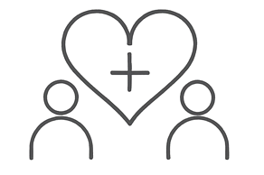

"Sentí que estaba en un espacio seguro, acompañada por alguien muy conocedora pero también cálida y humana. Marisol leyó mi carta con curiosidad y respeto. OBTUVE GRAN CLARIDAD. Sentí que entraba en un 'espacio sagrado' con ella, y estoy motivada a seguir consultándola y aprendiendo más". Maia Sherwood
¿Por qué me pasa lo que me pasa?
Why do things happen this way in my life?
La astrología tiene respuestas. Te acompaño a mirarlas.
Astrology has some answers. Let’s explore them.
Quién soy
Who am I
Marisol Pérez Casas, PhD
Marisol Pérez-Casas, PhD
Doctora en lingüística, astróloga por vocación
Doctor in Linguistics, Astrologer by Vocation
Te ayudo a encontrar claridad y autoconciencia a través de la astrología. Cuando trabajamos juntos, escucho atentamente tu historia, tus emociones y los cambios que puedes estar pasando.
Luego, con la ayuda de tu carta astral, miramos puntos importantes como: cuál es tu manera de percibir la vida, cuáles son tus necesidades emocionales, cómo te comunicas, y muchas otras claves que te pueden ayudar a observar tu vida desde otra perspectiva.
La astrología es un lenguaje que durante siglos ha servido para comprendernos y comprender las escenas que protagonizamos en la vida.
¿Por qué me pasa lo que me pasa? ¿Por qué no me pasa lo que quiero?
La herramienta de la astrología ofrece respuestas a estas preguntas. No lo hace desde el determinismo, ni desde la adivinación, sino desde un proceso paciente de autoobservación que te permite:
- Clarificar tus valores.
- Identificar patrones internos.
- Dar sentido a emociones.
- Apoyar ciclos de cambio.
- Facilitar la aceptación.
I help you find clarity and self-awareness through astrology. When we work together, I listen closely to your story, your emotions, and the transitions you may be moving through.
Then, with the help of your birth chart, we look at important points such as how you perceive life, what your emotional needs are, how you communicate, and many other key insights that can help you see your life from a different perspective.
Astrology is a language that, for centuries, has helped us understand ourselves and the scenes we play out in life.
Why is this happening to me? Why don't things go the way I wish?
Astrology offers answers to these questions. Not through determinism or divination, but through a patient process of self-observation that allows you to:
- Clarify your values.
- Reveal internal blocks.
- Make sense of your emotions.
- Support cycles of change.
- Facilitate acceptance.
El cielo refleja lo que habita en nosotros.
The sky reflects what lives within us.

Para qué
Purpose
Una herramienta de transformación
A Tool for Transformation
La astrología te ayuda a reconectarte con tu sabiduría interior. Es una manera eficaz de comprender tus patrones. Una vez conoces los patrones que se manifiestan en tu vida, tienes la posibilidad de cambiarlos o vivirlos de otra manera. Te acompaño en un camino para encontrar: claridad, propósito y presencia.
Astrology helps you reconnect with your inner wisdom. It’s an effective way to understand your patterns. Once you recognize the patterns that appear in your life, you have the possibility to change them or live them differently. I accompany you on a path toward clarity, purpose, and presence.
Bilingüe en inglés y español. Consultas en ambos idiomas.
I am fully bilingual in English and Spanish and consult in both languages.
Servicios
Services

Relaciones
Relationships
Transforma tus relaciones
Transform your relationships
Hijos
Children
Conoce a tu hijo/a de una forma única
Get to know your child in a unique way

Viaje interior
A Journey Within
Haz un viaje profundo hacia ti
Take a deep journey into yourself
el instrumento
the instrument
La carta natal
The Natal Chart
Guía astrológica con propósito
Astrological Guidance with Purpose
- Descubrir los relatos de vida que se ponen en marcha al nacer.
- Comprender dinámicas clave con padres, hijos o pareja.
- Obtener una mirada sin juicios a través de la cual verte.
- Replantear el propósito detrás de tus experiencias y desafíos.
- Discover the life narratives that were set in motion at your birth.
- Understand key dynamics with your parents, children, or partner.
- Gain a nonjudgmental lens through which to see yourself.
- Reframe the purpose behind your experiences and challenges.
La astrología: una guía hacia una nueva forma de percibir tu realidad.
Astrology: A guide to a new way of perceiving your reality.
Testimonios
Testimonials
"Aunque no era mi primera lectura, siento que esta vez APRENDÍ MUCHO MÁS y pude hacer preguntas, que Marisol respondió con detalle. Siento que obtuve una mejor comprensión de mí misma". Irene Lulo
"Explicó todo tan bien. AHORA MUCHAS DE MIS EXPERIENCIAS PASADAS TIENEN SENTIDO. Fue una revelación". Roberto Rodríguez
"Marisol estuvo atenta y enfocada en todo momento. Su lectura resonó con mis experiencias pasadas y presentes, tanto a nivel personal como profesional. Se sintió precisa y directa. SU LECTURA FUE CLARA. Su actitud fue positiva y su lectura, clara. Explicó el impacto de ciertos aspectos planetarios en diferentes áreas de mi vida, y si necesitaba más claridad, me la ofrecía sin dudar". Anna Kaganiec
"Marisol me hizo sentir muy cómodo. Se tomó el tiempo de explicar cada parte de la carta y el significado de cada posición con mucho detalle. VER MIS RELACIONES REFLEJADAS EN LA CARTA FUE FASCINANTE." Juan Fernández
"Los mensajes fueron INCREÍBLEMENTE PRECISOS, y sentí que Marisol realmente comprendió mi personalidad, fortalezas y desafíos". Daniel Chardón
"Mi parte favorita de la lectura fue darme cuenta de que soy quien soy y que SOY TAL COMO DEBO SER". Angélica Bevilacqua
"I felt that I was in a safe space, that I was with someone very knowledgeable but also warm and human. Marisol read my chart with curiosity and respect. I OBTAINED GREAT INSIGHT. I felt that I entered a 'sacred space' with her, and I am motivated to keep consulting with her and learning more." Maia Sherwood
"Although it wasn't my first reading, I feel like I LEARNED MORE this time and was able to ask questions, which Marisol answered in detail. I feel like I gained a better understanding of myself." Irene Lulo
"She explained everything so well. NOW MY PAST EXPERIENCES MAKE SENSE TO ME. It was a revelation." Roberto Rodríguez
"Marisol was attentive and focused throughout. Her reading resonated with both my past and present experiences, on personal and professional levels. It felt accurate and direct. Her attitude was positive and HER READING WAS CLEAR. She explained the impact of particular planetary aspects on different areas of my life and, if I needed further clarification, she provided it." Anna Kaganiec
"Marisol made me feel extremely comfortable. She took the time to thoroughly explain each part of the chart and the meaning of each placement. SEEING MY RELATIONSHIPS IN THE CHART WAS FASCINATING." Juan Fernández
"THE INSIGHTS WERE INCREDIBLY ACCURATE, and it felt like Marisol truly understood my personality, strengths, and challenges." Daniel Chardón
"My favorite part of the reading was realizing that I am who I am, and that I AM AS I SHOULD BE." Angélica Bevilacqua
¿Empezamos?
Shall we begin?
Cada viaje comienza con un paso. ¿Estás listo para explorar tu carta natal?
Every journey begins with a step. Are you ready to explore your natal chart?
Agendar lectura Book a reading